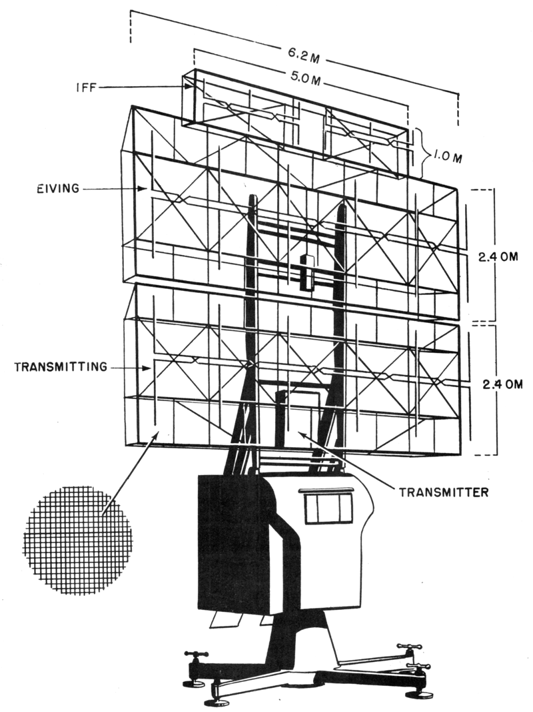
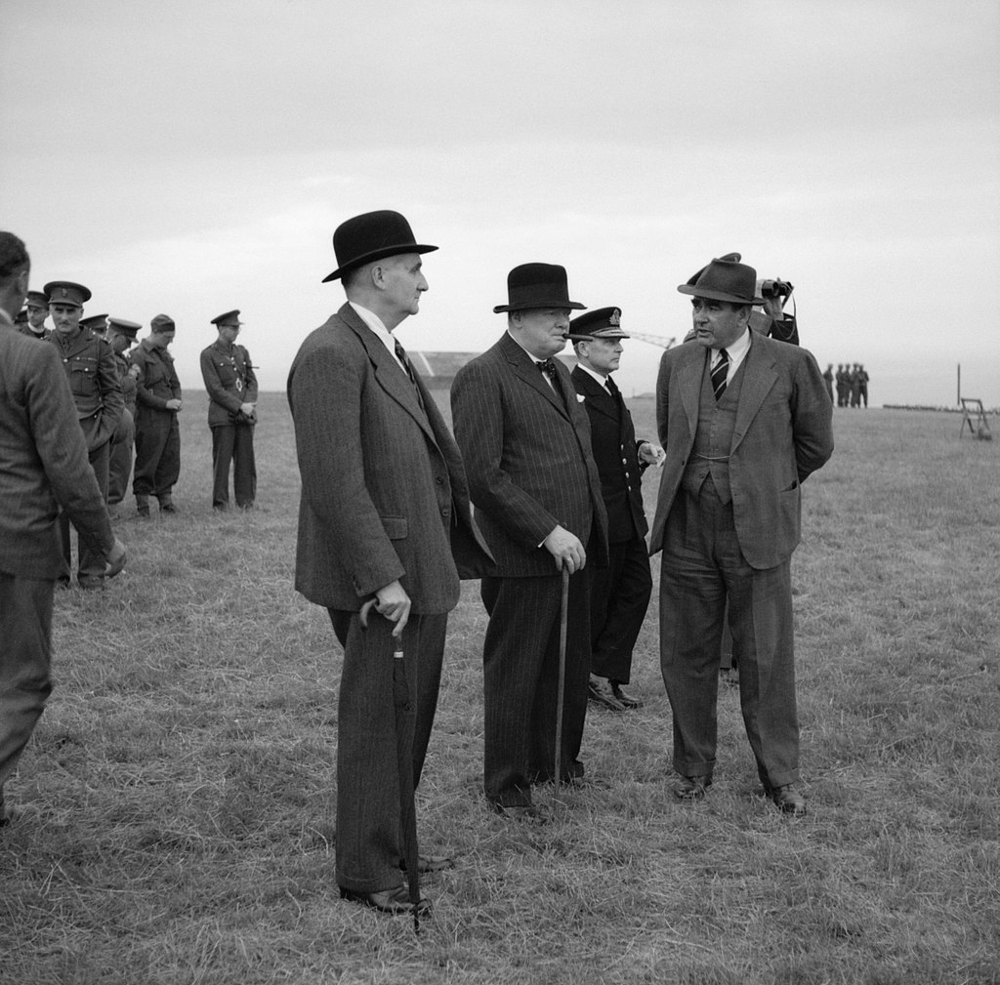
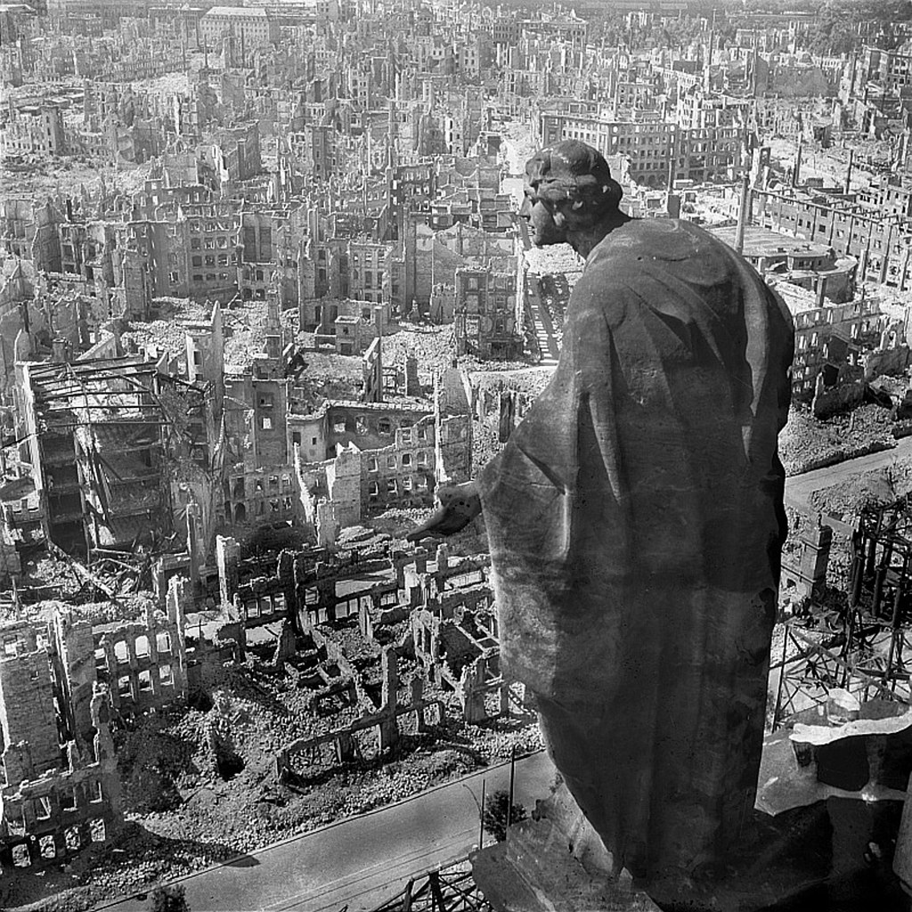
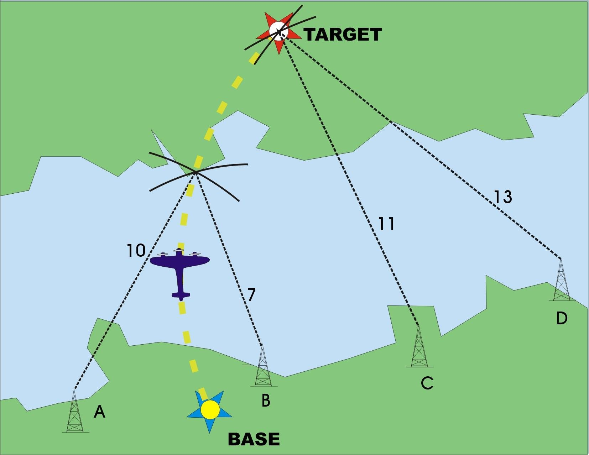
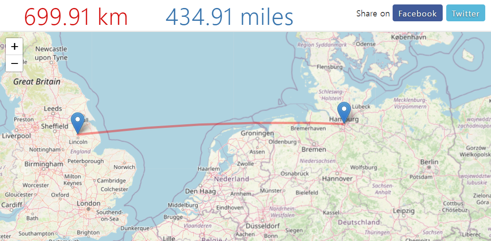
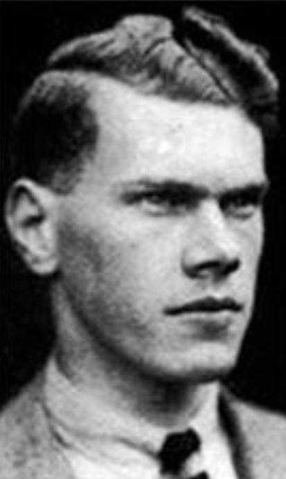

레이더 개발 이야기 (36) - 이제 우리는 독일로 간다
게시: 2023-06-29T06:30:07+09:00
<영국 항법사 실력이 젬병이면 독일 노동자가 집을 잃는다> 1939년 말까지 로열 에어포스의 폭격기들은 발트 해 연안의 독일 해군 기지 등에 대해 과감한 주간 폭격을 실시하고도 큰 피해가 없었음. 이유는 프랑스도 아직 항복하지 않았고 루프트바페의 전투기는 한정적이었으므로 로열 에어포스 폭격기들에 대한 요격 활동이 그다지 활발하지 못했기 때문. 그러나 1939년 12월 18일, 22대의 Vickers Wellington 폭격기들이 헬리골란트 만의 빌헬름스하벤(Wilhelmshaven) 항구를 공격할 때, 한 떼의 루프트바페 전투기들이 그 길목을 지키고 있다가 정확하게 달려들어 개박살을 내놓음. 결국 22대의 웰링턴 폭격기들 중 10대가 격추되었고 2대는 손상을 입고 바다에 불시착했으며 기지로 돌아온 10대 중 3대는 손상이 너무 커 폐기처분될 정도. 독일 전투기들의 피해는 딱 2대. 참사의 원인은 독일이 자체 개발한 Freya라는 레이더.

(프레야의 위용. 송신 안테나와 수신 안테나가 거대한 탑의 형태로 각각 따로 있던 영국 Chain Home radar에 비해 아담한 일체형으로 만들어진 것이 특징.) 이후 로열 에어포스의 폭격은 주로 야간에 수행되었는데, 전에 언급했듯이 항법사 실력 부족으로 목표물 8km 이내로 접근한 폭격기는 출격한 대수 대비 5%에 불과하다는 것이 1941년 중반 소위 'Butt report'에 의해 밝혀짐. 그래서 로열 에어포스에서도 루프트바페처럼 전파 항법 시스템을 준비. 그런데 그렇게 전파 항법을 준비하는 동안, 믿었던 폭격기 사령부(Bomber Command)에게 사기 당한 것에 머리가 어질어질한 처칠에게 그의 수석 과학 보좌관인 Frederick Lindemann은 조용히 이렇게 속삭임. "어차피 독일 공장 못 때려부순다는 것이 분명해졌으니, 공장에서 일하지 못하게 독일 노동자들 집을 때려부수죠 뭐."

(처칠 왼쪽이 린더만) 이것이 악명 높은 린더만의 'Dehousing' 개념. 1942년부터 영국 공군은 공장 대신 노동자의 집을 목표로 삼고 민간인 거주 지역을 광범위하게 폭격.

(1945년 드레스덴의 참상. 이 모든 것이 영국 항법사들이 수학을 못해서 벌어진 일 (아님)) <어? 여기까지 되네?> 1941년 Butt 보고서로 체면이 크게 깎인 로열 에어포스 폭격기 사령부는 폭격 횟수를 크게 줄이고 근신(?)에 들어감. 이유는 곧 대량으로 취역할 Avro Lancaster 장거리 폭격기를 기다리는 것도 있었으나 비밀리에 만들던 전파 항법 시스템 Gee의 완성을 기다리기 위해서. 지(Gee, Grid의 G)는 레이더 연구소에서 일하던 엔지니어인 Robert Dippy가 원래 폭격기의 야간 착륙을 돕기 위한 간단한 근거리 장치로 제안했던 것. 그 원리는 원래 1930년대 초반에도 잘 알려졌던 것. 바로 전파의 이동 속도가 일정하니 전파 등대에서 보내는 신호가 얼마만에 도착하는지를 측정하면 그 전파 등대로부터의 거리를 알 수 있고, 그런 전파 등대가 2곳 이상이면 각각의 등대로부터의 거리를 측정하여 location fix를 할 수 있다는 것. 실제로는 두 전파 등대 사이의 시간 동기화를 위해 하나의 master 등대와 2개의 slave 등대가 필요하는 등 좀더 복잡하지만, 아무튼 기술적 핵심은 두 등대로부터의 신호가 도착하는 시간 차이를 측정하는 것.

(Gee의 location fix 원리) 이 간단한 원리를 처음부터 쓰지 않은 것은 바로 빛의 속도로 움직이는 전파 신호의 도달 속도를 측정하기 위한 정밀 전자 소재 등을 구하기 쉽지 않았기 때문. 그런데 디피가 레이더 연구소에서 일하다 보니, 어차피 레이더 자체가 반사파의 속도를 측정하는 것인지라 그런 진공관과 CRT 디스플레이 등이 넘쳐났음. 그래서 야간에 어디가 활주로인지 찾지 못하는 조종사들을 위해 근거리 유도 장치로 그런 전파 등대를 고안했던 것. 무시 당했던 이 아이디어는 로열 에어포스가 헬리골란트 공중전에서 박살이 난 뒤 야간 폭격을 시작하면서 급속도로 관심을 끌어모음. 특히 기존의 Orford 전파 등대는 전파의 방향 탐지, 그리고 독일의 X-Gerät는 지향선 전파의 교차를 이용했던 것에 비해, 이건 그냥 전파의 속도 측정에 기반한 것이다보니 다른 것들에 비해 2가지 굉장한 장점이 있었음. 1) (X-Gerät와는 달리) 한번에 하나씩 특정 지점으로의 항법 유도가 아니라 일반적인 광역 항법에 사용 가능 2) (Ordford 전파 등대와는 달리) Location fix가 매우 신속 문제는 여기서 쓰던 30 MHz의 단파장 전파는 멀리까지 가기 어려우므로 사용 가능한 범위는 160km 정도에 불과. 그래서 독일 폭격에 정확한 좌표를 찍어주는 용도로는 생각하지 못했고, 돌아오는 폭격기들이 무사히 기지를 찾아올 수 있도록 유도하는 용도로 생각.

(Avro Lancaster 폭격기 기지가 있던 Scampton에서 함부르크까지는 약 700km) 그런데 막상 테스트를 해보니, 예상의 3배에 달하는 480km까지 훌륭하게 작동. 핵심은 폭격기들이 3km 상공까지 높이 비행했기 때문에 가능했던 것. 영국의 Scampton 공군 기지에서 함부르크까지의 거리가 약 700km. 그러니 함부르크 상공까지 정확하게 유도는 못하더라도 그 중간지점까지는 정확하게 유도해줄 수 있으므로 매우 유용. Dead reckoning (추측항법)은 비행 거리가 짧을 수록 정확도가 높아지기 때문임. 그런데 아직 Gee 시스템이 제대로 갖추어지기 전에 시험 폭격을 해보니 문제가 생김. 과연 어떤 것이었을까?
<난데없는 007 작전> 적용 범위가 점점 늘어난 Gee 전파 항법 시스템은 1941년 5월에는 이제 640km 밖까지도 정확한 location fix를 제공. 이에 자신감을 가진 로열 에어포스는 1941년 8월 11일 밤, 테스트라도 해보자며 손으로 만든 Gee 수신기를 장착한 2대의 Vickers Wellington을 독일 폭격 임무에 투입해봄. 결과는 대만족. 그래서 다음날 밤 다시 독일로의 폭격 임무에 투입했는데... 그만 2대 중 1대가 고사포에 맞았는지 엔진 고장인지 아무튼 돌아오지 못함. 로열 에어포스가 루프트바페의 전파 항법 시스템을 jamming으로 가지고 놀 수 있었던 이유는 추락한 독일 폭격기에서 찾아낸 전자 장비들을 분석해보았기 때문. 웰링턴 폭격기가 비교적 온전한 형태로 독일군 손에 들어가면 딱 보기에도 독특한 Gee 수신기는 금방 관심을 끌 것이고 자신들의 Gee 시스템도 X-Gerät 같은 독일 항법 장치처럼 jamming 당하는 것은 시간 문제. 로열 에어포스는 난리가 났음. 모든 실전 테스트는 즉각 중단됨. 문제는 웰링턴 폭격기가 얼마나 온전한 형태로 추락했는지, 과연 Gee 수신기가 독일군 손에 들어갔는지 알 수가 없다는 것. 로열 에어포스에서 jamming을 지휘하던 Reginald. V. Jones는 마냥 기다리지 않고 적극적인 가짜 뉴스를 퍼뜨려 대응. 즉 Jay라는 존재하지도 않는 시스템의 이름을 무선 교신에서 일부러 자주 사용하고, 동시에 영국 공군이 독일의 크니커바인(Knickebein)을 본 뜬 전파 항법 장치 Jay를 만들었다는 정보를 이중 스파이를 통해 독일로 보냄. 뿐만 아니라 그 정보에 신뢰성을 주기 위해 진짜로 크니커바인(Knickebein)과 같은 좁은 지향성 전파 beam을 독일 하늘 위로 쏘아댐. 이런 노력에도 불구하고 존스는 Gee 시스템 개통 이후 3개월이면 독일군이 그에 대한 jamming 시스템을 만들어낼 것이라고 예상. 독일군의 대응은 실제로는 훨씬 더 오래 걸렸음.

(Reginald V. Jones의 젊은 시절 사진. 이 양반은 1997년까지 장수했고, 알고 보면 요즘 전투기에 필수적으로 사용되는 chaff의 발명자이기도 함. 존스는 얇은 알루미늄 포일들을 공중에서 살포하면 마치 폭격기 편대처럼 보이므로 독일 야간전투기들을 엉뚱한 곳으로 유도할 수 있다고 보았음. 그러나 영국 공군 수뇌부는 이걸 사용하면 독일도 이게 뭔지 금방 알아채고 따라서 할 것이므로 사용을 주저. 그러다 1943년 중반 이후 영국의 공대공 레이더가 잘 준비되자 자신감을 가지고 독일 폭격에 사용 시작. 그런데 알고 보니 독일 공군도 똑같이 chaff를 발명해놓고 있었으나 똑같이 영국 공군이 따라할까봐 안 쓰고 있었다고.)